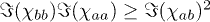
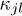
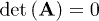

Introduction
Onsager symmetry holds for the vast majority of coupled linear phenomena on the mesoscopic and macroscopic scale. However,
the symmetry of transport coefficients is generally lost when time-reversal symmetry is broken through a magnetic field. Recently,
it has been suggested that magnetic breaking of Onsager symmetry may allow for the existence of finite-time heat engines with
vanishing entropy production and also allow an efficiency at maximum power that exceeds the Curzon-Ahlborn limit [1]. Although subsequent studies established a number of positive lower bounds for entropy production in concrete quantum-mechanical
systems [2–5], and classical heat engines [6,7], the results highlight the non-trivial nature of coupled transport in the presence of a magnetic field. A logical next step
is to combine the properties of magnetic couplings with topological features of a network.
Networks with classical oscillators, such as vibrating spring-damper collections, electric power grids [8,9], or electronic circuits are omnipresent in daily life. Desired system properties, e.g., in terms of frequency response or current rectification, often require active or non-linear elements, such as amplifiers
or diodes. We hypothesize here that linear elements that break Onsager symmetry could be a possible alternative. Such elements
can be built in a variety of ways: mechanically, a coupling via Lorentz forces can be realized with a charge on a forced,
two-dimensional pendulum in a magnetic field. Alternatively, electrical circuits can be connected via perpendicular sides
of a Hall element, which is called a gyrator [10–12]. Also, similar devices with microwaves are based on the Faraday effect [13]. In principle, even Coriolis forces can be employed as a time-reversal symmetry-breaking coupling.
In this letter, systems of linear oscillator equations are studied as a generic model for the above examples. Oscillators
interact by time-reversal symmetric forces as well as through Lorentz-force–like couplings. In spite of the simplicity, these systems are found to exhibit a rich linear response and unusual energetics.
Two aspects are particularly notable. Namely the possibility of fixing a transport direction through network properties and
a highly efficient energy transfer. While details of the system matter for mono-directional transport, network topology imposes
very general and easily perceivable constraints. Corresponding rules are provided. Next, general limits for the efficiency
are assessed. It is shown that both network loops and breaking of Onsager symmetry are necessary to remove technically important
constraints on linear energy transfer. Finally, the system behavior in the presence of additive and multiplicative noise is
discussed briefly.
Framework
Our networks consist of coupled real variables
that obey a Langevin equation as
represents, e.g., elastic constants for a mechanical system or capacitance for an electric network. κ must be positive definite for stability [14]. The antisymmetric matrix
represents Lorenz-force–like couplings.
 are positive friction constants. The noise
are positive friction constants. The noise
 obeys
and
with the thermal energy
. We assume that the two of the oscillators with indices a and b are driven as
. Non-dimensional units1
obeys
and
with the thermal energy
. We assume that the two of the oscillators with indices a and b are driven as
. Non-dimensional units1
1
The symmetric matrix
2
where ω is a fixed angular frequency. Phase differences will be written as
1
are used throughout the article.
We fix a force scale
and a typical coupling constant
. Time is non-dimensionalized by
. Since eq. (1) is non-dimensionalized by
 , x is scaled by
. Accordingly, bij and
are non-dimensionalized by
. All energies are scaled by
and power with
.
, x is scaled by
. Accordingly, bij and
are non-dimensionalized by
. All energies are scaled by
and power with
.
Since the system is driven with frequency ω we can write for the expectation value
. Fourier coefficients are always denoted by a tilde
, asterisks
denote complex conjugation. Equation (1) then yields
, the conservative forces are symmetric under time reversal and the complex admittance is symmetric
[15], which is usually referred to as Onsager symmetry.
3
4
Inversion of A yields the complex admittance
5
which determines the system's response to the driving forces. When
Energy transfer
The energetics in steady state are governed by average work rates at the actuated oscillators,
6
A net energy transmission through the system occurs when the power at one of the driven oscillators becomes negative. However,
the overall dissipation is necessarily positive semi-definite. It is given by the sum of the work rates
7
For broken Onsager symmetry, the direction of the energy flow and hence the choice of input and output oscillators generally
matters. In the following, the index b will be used for the oscillator that provides energy output. Then, the efficiency of the energy transfer can be defined as
of the power output is found by searching for an optimal phase difference
and magnitude of the driving force fb. In linear systems with conserved Onsager symmetry efficiency at maximum power is generally expected to be smaller than
 [16]. However, the following examples will demonstrate that networks of the type of eq. (1) do not necessarily obey such an energetic constraint. Moreover, the interplay of network topology and local breaking of
Onsager symmetry will allow further truly remarkable properties.
[16]. However, the following examples will demonstrate that networks of the type of eq. (1) do not necessarily obey such an energetic constraint. Moreover, the interplay of network topology and local breaking of
Onsager symmetry will allow further truly remarkable properties.
8
A key figure of merit is the efficiency at maximum power output, which is here defined for fixed frequencies as
9
where the maximum
Example 1: a highly efficient diode
Consider a network of three oscillators as depicted in fig. 1(a). The dynamics is described by eq. (1) where
 , thus we have
which yields a lengthy expression for χ on inversion. Broken Onsager symmetry now allows to choose coupling parameters in A such as to have
for any frequency while
. This condition yields the parameters
, and
. Note that stability conditions on κ now impose a stronger constraint on the remaining free parameters. As illustrated in fig. 1(b), (c) the system is a dynamic, but genuine diode. Forcing with f2 always leads to an anti-phase effect of oscillators 2 and 3 on oscillator 1, which completely blocks the response of the
latter. In contrast, forcing with f1 leads to no cancellation of 1 and 3, such that the energy can be carried around both sides of the structure.
, thus we have
which yields a lengthy expression for χ on inversion. Broken Onsager symmetry now allows to choose coupling parameters in A such as to have
for any frequency while
. This condition yields the parameters
, and
. Note that stability conditions on κ now impose a stronger constraint on the remaining free parameters. As illustrated in fig. 1(b), (c) the system is a dynamic, but genuine diode. Forcing with f2 always leads to an anti-phase effect of oscillators 2 and 3 on oscillator 1, which completely blocks the response of the
latter. In contrast, forcing with f1 leads to no cancellation of 1 and 3, such that the energy can be carried around both sides of the structure.
Fig. 1:

(Colour on-line) (a) Three-oscillator system with variables x1,2,3 where oscillators 1 and 2 can be forced. Red and black lines symbolize coupling with b, κ, respectively. (b) Working principle of the three-oscillator diode. (c) Exemplary diode response from a solution of eqs. (2), (3) with parameter conditions for example 1 and
,
. Left: blocking state; right: transmitting state. (d) Efficiency at maximum power
 of the diode approaches unity when
and
vanish. Parameters:
,
,
,
.
of the diode approaches unity when
and
vanish. Parameters:
,
,
,
.
In fig. 1(d) the efficiency at maximum power
is displayed. Explicit expressions can be found in the following sections. For this diode
 generally has only one maximum located at
generally has only one maximum located at
 . As shown, the system can asymptotically reach a unit efficiency at maximum power, which is achieved when friction in oscillators
1 and 2 vanish since
. In contrast to systems with conserved Onsager symmetry, this diode can reach its upper bound of efficiency at almost arbitrary
values of
. Analytical calculations for
show that the upper bound of
. As shown, the system can asymptotically reach a unit efficiency at maximum power, which is achieved when friction in oscillators
1 and 2 vanish since
. In contrast to systems with conserved Onsager symmetry, this diode can reach its upper bound of efficiency at almost arbitrary
values of
. Analytical calculations for
show that the upper bound of
 is reached when
tend to zero as
with h > 1. In the limit
, the system always becomes unstable since κ is then no longer positive definite. It should be emphasized that the theoretical reachability of
in a genuine linear-response steady state makes this new diode unique.
is reached when
tend to zero as
with h > 1. In the limit
, the system always becomes unstable since κ is then no longer positive definite. It should be emphasized that the theoretical reachability of
in a genuine linear-response steady state makes this new diode unique.
Example 2: isolated transmission chain
The working principle of the diode in example 1 can also allow for isolation of energy transfer in spatially extended systems.
Consider two chains as shown in fig. 2(a), consisting of N + 1 and N − 1 oscillators, respectively. The sought-for isolation mechanism should allow energy transfer in the lower chain without exciting
the upper chain. The oscillating variables of upper and lower chains
,
are assumed to obey
. The boundary conditions at the ends of the chains are given below2
in eq. (10) yields
to be independent of
if the upper off-diagonal and the lower diagonal entries vanish. Such a state can be achieved if the parameters are chosen
as
,
and the forcing frequency is
. Equation (11) then yields the wave vectors
,
 . Given proper boundary conditions2, we now have a one-way isolation of the upper chain from the lower chain as illustrated by the responses
. Given proper boundary conditions2, we now have a one-way isolation of the upper chain from the lower chain as illustrated by the responses
 in fig. 2(b). Note that isolation is here independent of the phase between the forces
and force magnitudes
in fig. 2(b). Note that isolation is here independent of the phase between the forces
and force magnitudes
 . Energy transmission is now also insensitive to spatial variations or friction in the upper chain.
. Energy transmission is now also insensitive to spatial variations or friction in the upper chain.
10
where noise is dropped for simplicity and the constants of time-reversal symmetric couplings are denoted by
2
. Isolated energy transfer requires a cancellation mechanism in the upper chain that holds for both forward- and backward-traveling
waves. Therefore, the system is made left-right symmetric by giving the two magnetic couplings with b at each oscillator in eq. (10) always the same sign. The wave mode ansatz
The boundary conditions for the chains in example 2 read
11
The asymmetry of the matrix in eq. (11) allows
Fig. 2:

(Colour on-line) (a) Oscillator system that allows mono-directional isolation of the upper chain from the lower chain. (b)
Snapshots of the whole-chain responses
for
. Top graph: when driven at the frequency
 , the upper chain is not excited by the energy transfer in the isolated lower chain. Bottom graph: driving at any other frequency
leads to excitations in both chains. (c) Efficiency at maximum power for isolated energy transfer through the lower chain
at
, the upper chain is not excited by the energy transfer in the isolated lower chain. Bottom graph: driving at any other frequency
leads to excitations in both chains. (c) Efficiency at maximum power for isolated energy transfer through the lower chain
at
 . Here, time reversibility of couplings is conserved in the isolated state, thus
. Parameters:
,
,
.
. Here, time reversibility of couplings is conserved in the isolated state, thus
. Parameters:
,
,
.
General rules for mono-directional transport
Diode-like directional links as in example 1 can emerge in any network with broken Onsager symmetry when off-diagonal elements
of the complex admittance vanish asymmetrically. If excitations are to travel from oscillator j to l but not the reverse way, the following conditions must hold for any ω:
is expressed with the submatrix
that results on elimination of row l and column j from A. To design a network with mono-directional links, system parameters must be determined by solving an expansion of eq. (12) for all orders of ω, which can be tedious. However, inspection of the network topology already provides important insight about the feasibility
of such links in systems of type (1). Three general rules are found to hold, and are illustrated in fig. 3:
12
Here,
1)
Mono-directional links require network loops.
2)
A mono-directional link between immediately coupled oscillators requires a loop of three oscillators.
3)
No oscillator can be connected in a totally mono-directional way where all links are directed towards or away from it.
Fig. 3:

(Colour on-line) Illustration of the rules that constrain mono-directional transport in arbitrary networks. Black arrows are
mono-directional links where excitations can only travel in one direction. Red/black lines indicate any coupling
.
Brief derivations are given in the last section of this letter. Rule 1) can be understood intuitively by thinking of mono-directional
transport as intrinsic negative interference that occurs only in one direction. Since interference requires superposition
of at least two signals, the necessity of loops is plausible. An extension of this argument provides physical understanding
of the second rule. Rule 2) derives from matching of powers of ω for the high-frequency limit of eq. (12). Here, a direct connection between two oscillators picks up the same power of ω as an indirect, magnetic coupling via a third oscillator. In order to balance each other, both must be present. Note that
rule 2) also holds when different oscillators in the system (1) are augmented with individual, but non-zero, “mass” factors at the second time derivatives.
Rule 3) can be justified by an interesting thermodynamical interpretation: Consider for now a force-free situation
and assume that the oscillators are embedded in individual heat baths, keeping them at different temperatures. The resulting
variation of noise levels leads to preferred dissipation at the “colder” oscillators. Heat exchange is given by the deviations of the kinetic oscillator temperatures from the temperatures
Tj of the heat baths as
[17]. If it was now possible to connect one oscillator j in a totally mono-directional way to all the rest of the network, heat would always flow either towards j or away from j, regardless of the temperature difference. Such a network is physically impossible since it would allow the construction
of a perpetuum mobile and violate the second law of thermodynamics.
Topology and efficiency at maximum power
To substantiate the conclusions drawn from example 1 above, this section provides general formulae and limits for the efficiency
at maximum power. We begin by rewriting the work rates conveniently in Fourier space with the complex admittance split into
real
and imaginary
parts. Using
for the input and output, we have from eq. (6)
is a function of the phase difference
as
 requires positive semi-definiteness of the matrix
.
requires positive semi-definiteness of the matrix
.
13
14
where
15
Inserting eq. (13) into the formula for overall dissipation (7), the condition
To calculate efficiency at maximum power
 , we first maximize
with respect to phase and force. Variables with values at maximum power are primed
. On setting the
, we first maximize
with respect to phase and force. Variables with values at maximum power are primed
. On setting the
 and
derivatives of
and
derivatives of
 in eq. (14) equal to zero we find
and
in eq. (14) equal to zero we find
and
 with
. Some care must be taken when selecting
since work is periodic in the phase. The maximum power output becomes
with
. Some care must be taken when selecting
since work is periodic in the phase. The maximum power output becomes
 can indeed be reached asymptotically when Lorentz-force–like couplings are present. Note, however, that this high efficiency
can indeed be reached asymptotically when Lorentz-force–like couplings are present. Note, however, that this high efficiency
 does not require in general mono-directional links.
does not require in general mono-directional links.
16
The above relations can be straightforwardly inserted into eqs. (8), (14) to obtain for the efficiency at maximum power
17
As demonstrated in fig. 1 for example 1, the bound
Next, we calculate the efficiency at maxium power when Onsager symmetry holds. Thus, we set
 . Using the symmetry of χ together with the above conditions determining
. Using the symmetry of χ together with the above conditions determining
 and
we have here
. The efficiency at maximum power for networks with Onsager symmetry results in
, which is for symmetric χ equivalent to
. The here-derived bound of
and
we have here
. The efficiency at maximum power for networks with Onsager symmetry results in
, which is for symmetric χ equivalent to
. The here-derived bound of
 is analogous to the Curzon-Ahlborn limit for heat machines [16,18,19]. In the quasistatic limit of vanishing ω we have
. Therefore,
and
. Consequently, for conserved Onsager symmetry, the efficiency at maximum power attains its absolute maximum at vanishing
driving frequency
and the transmitted power vanishes here. On the other hand, it is possible to show with examples that the absolute maximum
of
is analogous to the Curzon-Ahlborn limit for heat machines [16,18,19]. In the quasistatic limit of vanishing ω we have
. Therefore,
and
. Consequently, for conserved Onsager symmetry, the efficiency at maximum power attains its absolute maximum at vanishing
driving frequency
and the transmitted power vanishes here. On the other hand, it is possible to show with examples that the absolute maximum
of
 need not be located at
when Lorentz-force–like couplings are present.
need not be located at
when Lorentz-force–like couplings are present.
18
The last inequality follows from

Finally, we investigate the case of broken Onsager symmetry for a network without loops. In such a system each connected pair
of elements is connected via a unique path, which allows to express χ as follows [20]. Consider a path from oscillator with index j to oscillator l and denote the overall number of oscillators on the path by np. Since the sequence of indices on the path may be non-monotonic, we rename them by
where
and
. For
the inverse of the non-singular matrix A can then be written as
denotes the submatrix from which all the rows and columns carrying indices corresponding to elements of the path are removed.
When
 we replace
by unity. Only the factor K, representing the second bracket, depends on the direction of the path. For our systems (1), we have
and the reverse path thus yields
. This relation is now used together with the maximum-power condition for
we replace
by unity. Only the factor K, representing the second bracket, depends on the direction of the path. For our systems (1), we have
and the reverse path thus yields
. This relation is now used together with the maximum-power condition for
 in eq. (15) to give
and
. Inserting everything in eq. (17) yields for any loop-free system
not only requires broken Onsager symmetry, but also network loops.
in eq. (15) to give
and
. Inserting everything in eq. (17) yields for any loop-free system
not only requires broken Onsager symmetry, but also network loops.
19
where
20
where the bound follows from positivity of energy dissipation, eqs. (7), (14). This equation shows that achieving an efficiency at maximum power larger than
Tunable high-frequency efficiency
A further energetic advantage of Lorentz-force–like coupling occurs when a direct link
between input and output exists. An expansion of efficiency, eq. (8) with eq. (14), shows that systems of type (1) all have the same high-frequency limit
21
Lorentz-force–like coupling thus allows to extend the good efficiency to high frequencies.
Fluctuations and multiplicative noise
The network equation (1) contains a source of additive noise
 for completeness. Such noise does not affect the results in this article. Mechanisms for mono-directional transport depend
only on system parameters and apply to noise-driven excitations as much as to any other excitation. In contrast to other definitions
of efficiency [21], the here-defined efficiency η does not fluctuate. Concerning the work rates, eq. (6), these contain expectation values
and additive noise is thus averaged out.
for completeness. Such noise does not affect the results in this article. Mechanisms for mono-directional transport depend
only on system parameters and apply to noise-driven excitations as much as to any other excitation. In contrast to other definitions
of efficiency [21], the here-defined efficiency η does not fluctuate. Concerning the work rates, eq. (6), these contain expectation values
and additive noise is thus averaged out.
However, multiplicative noise resulting from parameter fluctuations, in particular from unsteady magnetic fields, could have
a more pronounced effect. On using the Stratonowich interpretation it can be shown that white noise in b renormalizes the friction constants
in the equation for the first moments of xj [22]. Multiplicative noise in b increases the effective friction, but does not lead to instabilities. Therefore, the principles described in this letter
continue to work for averages when the magnetic coupling fluctuates. Mono-directional transport remains possible on average.
Concluding perspectives
Although linear oscillators are an established paradigm of physics, the energetics of oscillator networks with Lorentz-force–like couplings has hardly been explored. Focussing on networks with only the most generic types of coupling, it has been shown
here that unusual transport properties entail favorable energetics and result from the interplay of network topology and time-reversal
symmetry breaking.
Other types of couplings could also be studied with the present framework. Firstly, one could consider frictional/resistive
interaction of the network elements via a symmetric matrix of coefficients
. With such coupling the off-diagonal elements of A no longer form a Hermitian matrix and the above rules do not hold. Most notably, a diode-like device could be made in a system
with only two elements. Combining here a magnetic coupling b12 with an equally strong frictional/resistive force
 yields a diode since the off-diagonal elements become
and
, respectively. Such a device has been realized using a Hall element [11,23]. However, frictional coupling causes extra dissipation and one might therefore expect that this article's mechanisms for
mono-directional transport generally display a superior efficiency. Secondly, one could generalize the system through coupling
of the second time derivatives. Such coupling is realized physically by shared moments of inertia or by mutual induction.
It affects the high-ω regime and allows efficient energy transfer there. Finally, one could go beyond the assumption of network linearity. In this
case, the efficiency at maximum power is generally not limited by
yields a diode since the off-diagonal elements become
and
, respectively. Such a device has been realized using a Hall element [11,23]. However, frictional coupling causes extra dissipation and one might therefore expect that this article's mechanisms for
mono-directional transport generally display a superior efficiency. Secondly, one could generalize the system through coupling
of the second time derivatives. Such coupling is realized physically by shared moments of inertia or by mutual induction.
It affects the high-ω regime and allows efficient energy transfer there. Finally, one could go beyond the assumption of network linearity. In this
case, the efficiency at maximum power is generally not limited by
 , even when Onsager symmetry is conserved [18]. Besides energetic issues, it might also be interesting to study correlations or synchronization [24–26] of non-linear oscillators in networks with Lorentz-force–like couplings.
, even when Onsager symmetry is conserved [18]. Besides energetic issues, it might also be interesting to study correlations or synchronization [24–26] of non-linear oscillators in networks with Lorentz-force–like couplings.
It is tempting to speculate about a few applications of the studied system. Periodic structures related to the oscillator
chain in example 2 might allow for cloaking-inspired [27] mono-directional shielding. Mechanical devices, such as a mono-directional vibration damper, are at least in principle conceivable.
Realization of the suggested high efficiency in electric circuits hinges on the availability of low-resistance symmetry-breaking
couplings [28–30]. With these, efficient magnetic-field programmable networks could operate much like a transistor circuit, with the major
distinction of being linear.
Acknowledgments
The author is indebted to Prof. U. Seifert for long-standing support and for discussions. Prof. H. A. Stone is thanked for comments on the manuscript. A postdoctoral fellowship from the DAAD is acknowledged.
Appendix:
brief derivations of rules 1–3
Rule 1: Mono-directional links require network loops. This rule is shown most easily with eq. (19) by demonstrating that conditions (12) cannot be satisfied in a connected, but acyclic system. Since the offdiagonal elements of A are Hermitian,
and
are here related to each other through complex conjugation of the terms
in the factor K. Thus, if
, also
and diode-like behavior is impossible.
Rule 2: A mono-directional link between immediately coupled oscillators requires a loop of three oscillators. This rule demands a direct link between j and l, therefore we assume
. On using the Leibniz formula for determinants it can be shown that
where No is the number of oscillators in the system. This expansion is to vanish for all ω. Hence, the first term requires
. In the bracketed expression,
can only be balanced by a non-zero last term
. This last term requires oscillators with index m that are directly connected to both oscillators j and l, hence making a loop of three oscillators necessary.

Rule 3: No oscillator can be connected in a totally mono-directional way. Assuming that an oscillator with index k has only mono-directional links, we show that such a system would have unphysical properties. According to eq. (12), we require for all j with
 that
. On using this statement in Laplace's formula the determinant of the system matrix becomes
However, on writing out
for all j's with
it becomes clear that also
since all rows in
are made linearly dependent on each other if
. Therefore, we have
and a totally mono-directional coupling of k would make the system singular, which is unphysical.
that
. On using this statement in Laplace's formula the determinant of the system matrix becomes
However, on writing out
for all j's with
it becomes clear that also
since all rows in
are made linearly dependent on each other if
. Therefore, we have
and a totally mono-directional coupling of k would make the system singular, which is unphysical.

References
1
BenentiG.SaitoK.CasatiG.2011Phys. Rev. Lett.106230602
2
BüttikerM.ImryY.LandauerR.PinhasS.1985Phys. Rev. B316207
3
BrandnerK.SaitoK.SeifertU.2013Phys. Rev. Lett.110070603
4
WhitneyR. S.2014Phys. Rev. Lett.112130601
5
BrandnerK.SeifertU.2015Phys. Rev. E91012121
6
AllahverdyanA. E.HovhannisyanK. V.MelkikhA. V.GevorkianS. G.2013Phys. Rev. Lett.111050601
7
StarkJ.BrandnerK.SaitoK.SeifertU.2014Phys. Rev. Lett.112140601
8
CarmiS.WuZ.HavlinS.StanleyH. E.2008EPL8428005
9
RohdenM.SorgeA.TimmeM.WitthautD.2012Phys. Rev. Lett.109064101
10
TellegenB. D.1948Philips Res. Rep.381
11
WickR. F.1954J. Appl. Phys.25741
12
GrubbsW.1959Bell Syst. Tech. J.38853
13
HoganC. L.1953Rev. Mod. Phys.25253
14
StrogatzS. H.1994Nonlinear Dynamics and Chaos
Perseus Publishing
15
HashitsumeN.TodaM.KuboR.SaitōN.1992Statistical Physics II
Springer
16
CurzonF.AhlbornB.1975Am. J. Phys.4322
17
SekimotoK.1998Progr. Theor. Phys. Suppl.13017
18
EspositoM.LindenbergK.Van den BroeckC.2009Phys. Rev. Lett.102130602
19
Van den BroeckC.KumarN.LindenbergK.2012Phys. Rev. Lett.108210602
20
KleinD.1982Linear Algebra Appl.42109
21
VerleyG.EspositoM.WillaertT.Van den BroeckC.2014Nat. Commun.54721
22
SabassB.in preparation
23
MasonW.HewittW.WickR.1953J. Appl. Phys.24166
24
JülicherF.DierkesK.LindnerB.ProstJ.MartinP.2009Eur. Phys. J. E29449
25
RenJ.WangW.‐X.LiB.LaiY.‐C.2010Phys. Rev. Lett.104058701
26
MartensE. A.ThutupalliS.FourrièreA.HallatschekO.2013Proc. Natl. Acad. Sci. U.S.A.11010563
27
PendryJ. B.SchurigD.SmithD. R.2006Science3121780
28
ZhaiJ.LiJ.DongS.ViehlandD.BichurinM.2006J. Appl. Phys.100124509
29
ViolaG.DiVincenzoD. P.2014Phys. Rev. X4021019
30
EstepN. A.SounasD. L.SoricJ.AlùA.2014Nat. Phys.10923